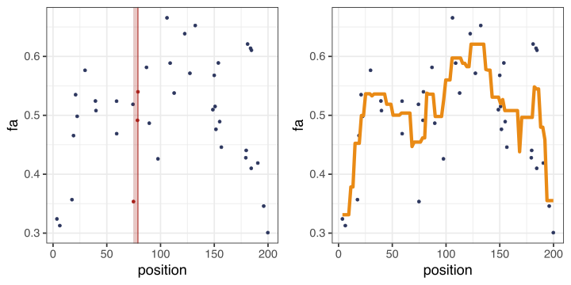
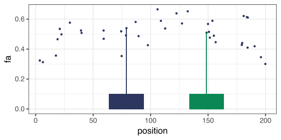
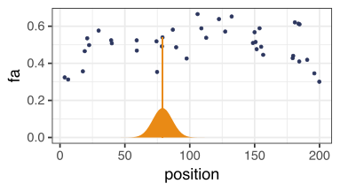
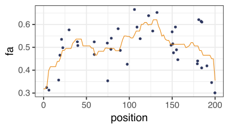
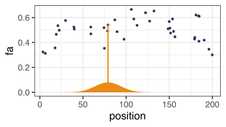
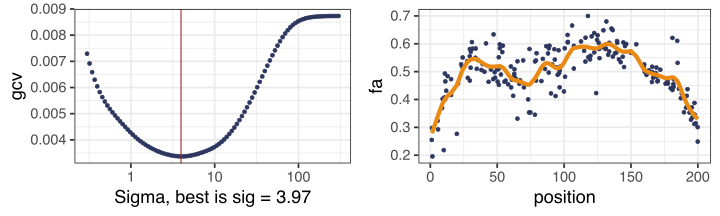

Two Great Questions from Last Lecture
1) The Bias of OLS
In last class’ clicker question, we were trying to predict income from a \(p=2\) , \(n=50000\) dataset. I claimed that the OLS predictor is high bias in this example.
OLS predictor is unbiased (via the following proof):
A. Assume that \(y = x^\top \beta + \epsilon, \quad \epsilon \sim \mathcal N(0, \sigma^2).\)
B. Then \(E[\hat \beta_\mathrm{ols}] = E[ E[\hat \beta_\mathrm{ols} \mid \mathbf X] ]\)
C. \(E[\hat \beta_\mathrm{ols} \mid \mathbf X] = (\mathbf X^\top \mathbf X)^{-1} \mathbf X^\top E[ \mathbf y \mid \mathbf X]\)
D. \(E[ \mathbf y \mid \mathbf X] = \mathbf X \beta\)
E. So \(E[\hat \beta_\mathrm{ols}] - \beta = E[(\mathbf X^\top \mathbf X)^{-1} \mathbf X^\top \mathbf X \beta] - \beta = \beta - \beta = 0\) .
Why did this proof not apply to the clicker question? (Which step of this proof breaks down?)
1) The Bias of OLS
Which step did the proof break down?
A. Assume that \(y = x^\top \beta + \epsilon, \quad \epsilon \sim \mathcal N(0, \sigma^2).\)
It is (almost certainly) not the case that Income ~ Age + Education.
\(y \sim f(x) + \epsilon\) where \(f(x)\) is some potentially nonlinear function. So
\[
\begin{align}
E[\hat \beta_\mathrm{ols}] = E[E[\hat \beta_\mathrm{ols} \mid \mathbf X ]]
= E[ (\mathbf X^\top \mathbf X)^{-1} \mathbf X f(\mathbf X) ] \ne \beta
\end{align}
\]
In statistics speak, our model is misspecified .Ridge/lasso will always increase bias and decrease variance, even under misspecification.
2) Why does ridge regression shrink varinace?
Mathematically
Variance of OLS: \(\mathrm{Cov}[\hat \beta_\mathrm{ols}] = \sigma^2 E[ (\mathbf X^\top \mathbf X)^{-1} ]\)
Variance of ridge regression: \(\mathrm{Cov}[\hat \beta_\mathrm{ols}] = \sigma^2 E[ (\mathbf X^\top \mathbf X + \lambda \mathbf I)^{-1} ]\)
Intuitively…
Think about the constrained optimization problem pictorally.
11 Local methods
Stat 406
Geoff Pleiss, Trevor Campbell
Last modified – 08 October 2024
\[
\DeclareMathOperator*{\argmin}{argmin}
\DeclareMathOperator*{\argmax}{argmax}
\DeclareMathOperator*{\minimize}{minimize}
\DeclareMathOperator*{\maximize}{maximize}
\DeclareMathOperator*{\find}{find}
\DeclareMathOperator{\st}{subject\,\,to}
\newcommand{\E}{E}
\newcommand{\Expect}[1]{\E\left[ #1 \right]}
\newcommand{\Var}[1]{\mathrm{Var}\left[ #1 \right]}
\newcommand{\Cov}[2]{\mathrm{Cov}\left[#1,\ #2\right]}
\newcommand{\given}{\ \vert\ }
\newcommand{\X}{\mathbf{X}}
\newcommand{\x}{\mathbf{x}}
\newcommand{\y}{\mathbf{y}}
\newcommand{\P}{\mathcal{P}}
\newcommand{\R}{\mathbb{R}}
\newcommand{\norm}[1]{\left\lVert #1 \right\rVert}
\newcommand{\snorm}[1]{\lVert #1 \rVert}
\newcommand{\tr}[1]{\mbox{tr}(#1)}
\newcommand{\brt}{\widehat{\beta}^R_{s}}
\newcommand{\brl}{\widehat{\beta}^R_{\lambda}}
\newcommand{\bls}{\widehat{\beta}_{ols}}
\newcommand{\blt}{\widehat{\beta}^L_{s}}
\newcommand{\bll}{\widehat{\beta}^L_{\lambda}}
\newcommand{\U}{\mathbf{U}}
\newcommand{\D}{\mathbf{D}}
\newcommand{\V}{\mathbf{V}}
\]
Last time…
We looked at feature maps as a way to do nonlinear regression.
We used new “features” \(\Phi(x) = \bigg(\phi_1(x),\ \phi_2(x),\ldots,\phi_k(x)\bigg)\)
Now we examine a nonparametric alternative
Suppose I just look at the “neighbours” of some point (based on the \(x\) -values)
I just average the \(y\) ’s at those locations together
Let’s use 3 neighbours
Code
library (cowplot)data (arcuate, package = "Stat406" )set.seed (406406 )<- arcuate |> slice_sample (n = 40 ) |> arrange (position)<- 15 <- 3 <- function (x, n = 101 ) seq (min (x, na.rm = TRUE ), max (x, na.rm = TRUE ), length.out = n)<- sort.int (abs (arcuate_unif$ position - arcuate_unif$ position[pt]), index.return = TRUE )$ ix[1 : nn]$ neighbours = seq_len (40 ) %in% neibs<- ggplot (arcuate_unif, aes (position, fa, colour = neighbours)) + geom_point () + scale_colour_manual (values = c (blue, red)) + geom_vline (xintercept = arcuate_unif$ position[pt], colour = red) + annotate ("rect" , fill = red, alpha = .25 , ymin = - Inf , ymax = Inf ,xmin = min (arcuate_unif$ position[neibs]), xmax = max (arcuate_unif$ position[neibs])+ theme (legend.position = "none" )<- ggplot (arcuate_unif, aes (position, fa)) + geom_point (colour = blue) + geom_line (data = tibble (position = seq_range (arcuate_unif$ position),fa = FNN:: knn.reg ($ position, matrix (position, ncol = 1 ),y = arcuate_unif$ fa$ predcolour = orange, linewidth = 2 plot_grid (g1, g2, ncol = 2 )

KNN
data (arcuate, package = "Stat406" )library (FNN)<- arcuate |> slice_sample (n = 40 ) |> arrange (position) <- seq (min (arcuate_unif$ position), max (arcuate_unif$ position),length.out = 101 <- knn.reg (train = arcuate_unif$ position, test = matrix (arcuate_unif$ position, ncol = 1 ), y = arcuate_unif$ fa, k = 3
This method is \(K\) -nearest neighbours.
It’s a linear smoother just like in previous lectures: \(\widehat{\mathbf{y}} = \mathbf{S} \mathbf{y}\) for some matrix \(S\) .
You should imagine what \(\mathbf{S}\) looks like.
What is the degrees of freedom of KNN, and how does it depend on \(k\) ?
How does \(k\) affect the bias/variance?
\(\mathrm{df} = \tr{\mathbf S} = n/k\) .\(k = n\) produces a constant predictor (highest bias, lowest variance).\(k = 1\) produces a low bias but extremely high variance predictor.
Code
set.seed (406406 )<- function (k) {ggplot (arcuate_unif, aes (position, fa)) + geom_point (colour = blue) + geom_line (data = tibble (position = seq_range (arcuate_unif$ position),fa = FNN:: knn.reg ($ position, matrix (position, ncol = 1 ),y = arcuate_unif$ fa,k = k$ predcolour = orange, linewidth = 2 + ggtitle (paste ("k =" , k))<- plot_knn (1 )<- plot_knn (5 )<- plot_knn (length (arcuate_unif$ position))plot_grid (g1, g2, g3, ncol = 3 )

Local averages (soft KNN)
KNN averages the neighbours with equal weight.
But some neighbours are “closer” than other neighbours.
Instead of choosing the number of neighbours to average, we can average any observations within a certain distance.
The boxes have width 30.
What is a “kernel” smoother?
A kernel is any function \(K\) such that for any \(u\) ,
\(K(u) \geq 0\) ,\(\int K(u) du = 1\) ,\(\int uK(u) du = 0\) .
Smoothing with the boxcar
Code
<- seq (0 , 200 , length.out = 101 )<- abs (outer (testpts, arcuate_unif$ position, "-" ))<- (dmat < 15 )<- S / rowSums (S)<- tibble (position = testpts, fa = S %*% arcuate_unif$ fa)ggplot (arcuate_unif, aes (position, fa)) + geom_point (colour = blue) + geom_line (data = boxcar, colour = orange)
This one gives the same non-zero weight to all points within \(\pm 15\) range.
Other kernels
Most of the time, we don’t use the boxcar because the weights are weird.Ideally we would like closer points to have more weight.
A more common kernel: the Gaussian kernel
\[
K(u) = \frac{1}{\sqrt{2 \pi \sigma^2}} \exp\left(-\frac{u^2}{2\sigma^2}\right)
\]
For the plot, I made \(\sigma=7.5\) .
Now the weights “die away” for points farther from where we’re predicting.(but all nonzero!!)
Code
<- function (x) dnorm (x, mean = arcuate_unif$ position[15 ], sd = 7.5 ) * 3 ggplot (arcuate_unif, aes (position, fa)) + geom_point (colour = blue) + geom_segment (aes (x = position[15 ], y = 0 , xend = position[15 ], yend = fa[15 ]), colour = orange) + stat_function (fun = gaussian_kernel, geom = "area" , fill = orange)
Other kernels
What if I made \(\sigma=15\) ?
Code
<- function (x) dnorm (x, mean = arcuate_unif$ position[15 ], sd = 15 ) * 3 ggplot (arcuate_unif, aes (position, fa)) + geom_point (colour = blue) + geom_segment (aes (x = position[15 ], y = 0 , xend = position[15 ], yend = fa[15 ]), colour = orange) + stat_function (fun = gaussian_kernel, geom = "area" , fill = orange)
Before, points far from \(x_{15}\) got very small weights, now they have more influence.
For the Gaussian kernel, \(\sigma\) determines something like the “range” of the smoother.
Many Gaussians
The following code creates \(\mathbf{S}\) for Gaussian kernel smoothers with different \(\sigma\)
<- as.matrix (dist (x))<- function (sigma) {<- dnorm (dmat, sd = sigma) # not an argument, uses the global dmat sweep (gg, 1 , rowSums (gg), "/" ) # make the rows sum to 1.
Code
<- function (sigma) {<- dnorm (dmat, sd = sigma) # not an argument, uses the global dmat sweep (gg, 1 , rowSums (gg),'/' ) # make the rows sum to 1. $ S15 = with (arcuate_unif, Sgauss (15 ) %*% fa)$ S08 = with (arcuate_unif, Sgauss (8 ) %*% fa)$ S30 = with (arcuate_unif, Sgauss (30 ) %*% fa)= boxcar %>% select (position, S15, S08, S30) %>% pivot_longer (- position, names_to = "Sigma" )ggplot (arcuate_unif, aes (position, fa)) + geom_point (colour = blue) + geom_line (data = bc, aes (position, value, colour = Sigma), linewidth = 1.5 ) + scale_colour_brewer (palette = "Set1" )
The bandwidth
Choosing \(\sigma\) is very important.
This “range” parameter is called the bandwidth .
It is way more important than which kernel you use.
Choosing the bandwidth
As we have discussed, kernel smoothing (and KNN) are linear smoothers
\[\widehat{\mathbf{y}} = \mathbf{S}\mathbf{y}\]
The degrees of freedom is \(\textrm{tr}(\mathbf{S})\)
Therefore we can use our model selection criteria from before
Unfortunately, these don’t satisfy the “technical condition”, so cv_nice() doesn’t give LOO-CV
Smoothing the full Lidar data
<- arcuate |> slice_sample (n = 200 )<- function (y, S) {<- S %*% ymean ( (y - yhat)^ 2 / (1 - mean (diag (S)))^ 2 )<- function (y, S) {<- S %*% ymean ( (y - yhat)^ 2 / (1 - diag (S))^ 2 )<- as.matrix (dist (ar$ position))<- 10 ^ (seq (log10 (300 ), log10 (.3 ), length = 100 ))<- map_dbl (sigmas, ~ gcv (ar$ fa, Sgauss (.x)))<- map_dbl (sigmas, ~ fake_loocv (ar$ fa, Sgauss (.x)))<- sigmas[which.min (gcvs)]<- sigmas[which.min (flcvs)]$ smoothed <- Sgauss (best_s) %*% ar$ fa$ other <- Sgauss (other_s) %*% ar$ fa
Smoothing the full Lidar data
Code
<- ggplot (data.frame (sigma = sigmas, gcv = gcvs), aes (sigma, gcv)) + geom_point (colour = blue) + geom_vline (xintercept = best_s, colour = red) + scale_x_log10 () + xlab (sprintf ("Sigma, best is sig = %.2f" , best_s))<- ggplot (ar, aes (position, fa)) + geom_point (colour = blue) + geom_line (aes (y = smoothed), colour = orange, linewidth = 2 )plot_grid (g3, g4, nrow = 1 )
I considered \(\sigma \in [0.3,\ 300]\) and used \(3.97\) .
It’s too wiggly, to my eye. Typical for GCV.
Smoothing manually
I did Kernel Smoothing “manually”
For a fixed bandwidth
Compute the smoothing matrix
Make the predictions
Repeat and compute GCV
The point is to “show how it works”. It’s also really easy.
R functions / packagesThere are a number of other ways to do this in R
loess ()ksmooth ():: locpoly ():: gam ():: npreg ()
These have tricks and ways of doing CV and other things automatically.
Note
All I needed was the distance matrix dist(x).
Given ANY distance function
say, \(d(\mathbf{x}_i, \mathbf{x}_j) = \Vert\mathbf{x}_i - \mathbf{x}_j\Vert_2 + I(x_{i,3} = x_{j,3})\)
I can use these methods.